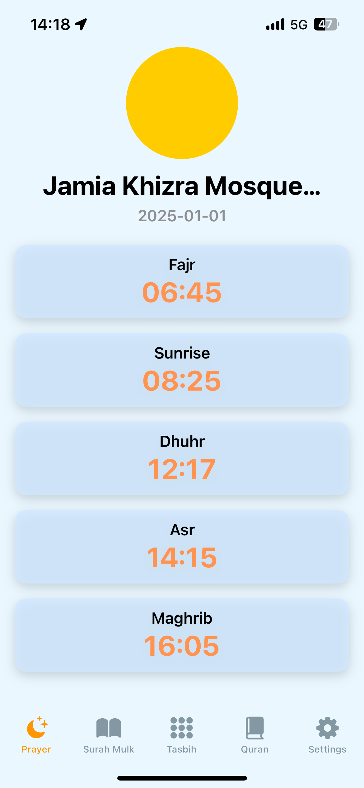
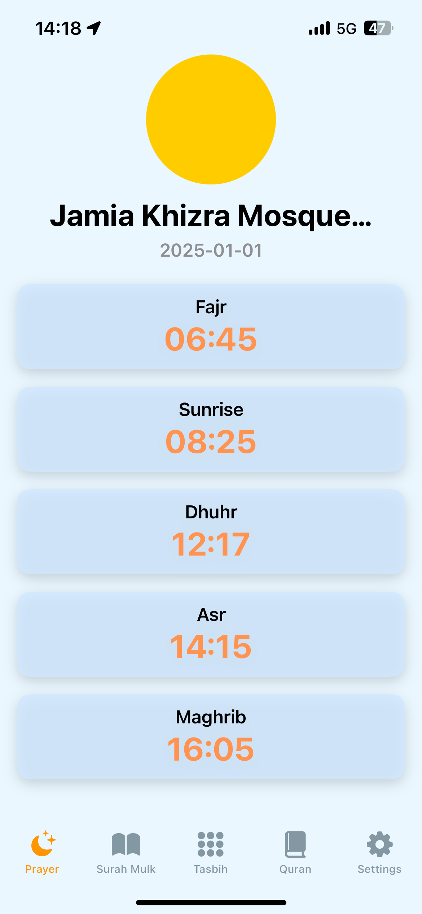

Your nightly prayer companion
Stay connected to your worship with accurate prayer times for the Last Third of the Night and Midnight. Features include London Unified Prayer Times, timely notifications, and no location settings required.
 


Problem, Agitation, Solution
Problem: You want accurate nightly prayer times but struggle with calculations.
Agitation: Missing prayers disrupts your worship routine, leaving you disconnected.
Solution: Third of the Night ensures accurate Midnight and Last Third timings for better worship.
Features Tell, Benefits Sell
Features: Tracks Midnight and Last Third, shows prayer times, offers a Quran listening feature.
Benefits: Helps you worship consistently, stay motivated, and enjoy enhanced spiritual focus.
Social Proof
"Well Designed App: Such an easy to navigate app, which is quite refreshing."
- Imran_778
Visual Storytelling
Engage with intuitive designs that showcase prayer times in a visually appealing way.
Why Choose Third of the Night?
It's not just about tracking prayer times; it's about strengthening your connection with nightly worship.
Get Started Today